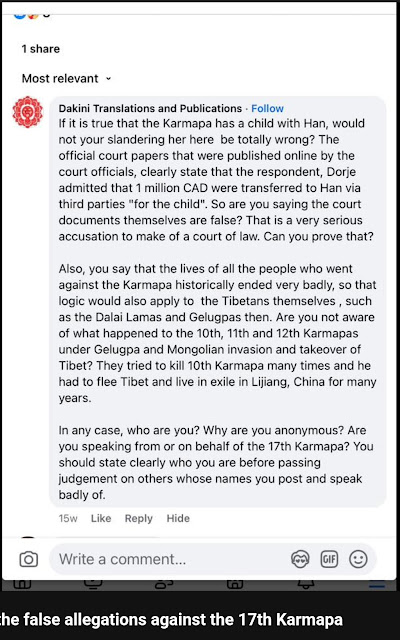

WHAT TYPE OF OPERATIONS MUST BE SUSTAINED WITH SYSTEMIC MENDACITY?
Executive Summary: When every statement in a single article is verified to be obtusely deceptive, what to make of the gremlin's entire eight-year corpus of 1002 articles since April 2018 to June 2026? Is it still surprising why it must loudly scream its devotion to the gurus and passion in the Buddhadharma to cover for its public footprints of sheer malice and systemic mendacity? Lies after lies being engineered remorselessly for public ingestion. Every output defies its operational slogan. In spite of the crafted veneer of feminism, scholarship and respectability, the gremlin who is inherently incapable of integrity does not possess any trace of femininity, accountability or cognitive coherence.
This statement to characterize an objective public audit of Dakini Translations and Publications as "unlawful harassment" or "personal defamation" is legally and factually meritless.
The Public Figure Doctrine and Its Digital Forensics
The gremlin's assertion of private-citizen status is structurally contradicted by both its historical conduct and its current operational methodologies.
Far from an accidental participant in a recent dispute, it possesses a documented at least fourteen-year pattern of voluntary public intervention, tracing back directly to highly publicized institutional disruptions in the 2012–2014 period. This long-term history establishes a consistent, deliberate intent to occupy a position of public prominence and influence within the public ecosystem.
Furthermore, objective digital forensics entirely dismantle its claim of lacking media access. Verification via Meta’s Page Transparency architecture reveals that Dakini Translations does not operate as a private individual venting personal grievances; rather, it commands a sophisticated, multi-admin publishing apparatus utilizing paid advertising networks and targeted promotional campaigns (Facebook verbatim: This Page has run ads about social issues, elections or politics) to artificially amplify its writings to a global audience.

Because The gremlin has historically (since 2012) and structurally (via paid digital marketing) chosen to act as a public advocate and commercial-grade publisher, it meets every legal standard of a limited-purpose public figure. Consequently, its public campaigns are fully subject to public scrutiny, transparency auditing, and protected critique.
Anonymity is a Protected Right, Not Evidence of Illegality
The gremlin's pejorative dismissal of anonymity ("Gits anonymous") betrays a fundamental misunderstanding of modern media law. The use of a pseudonym or an anonymous platform to publish factual, evidence-based critiques is a legally protected right, established precisely to protect citizens from retaliatory intimidation, frivolous litigation, or personal doxxing by powerful public figures or legally trained individuals. The legal validity of an audit relies strictly on the accuracy of the data presented—not the identity of the reviewer.
Strict Demarcation of Critique
This platform enforces an absolute firewall between the public life and the private life of an individual. The content hosted here is restricted entirely to "public activities and actions" of a limited-purpose public figure.
Labeling robust, data-driven accountability as "bullying" or "misogyny" is a disingenuous low-innovation attempt to evade legitimate scrutiny. This platform will not be intimidated by the DARVO framing. The audit remains active, factual, and fully protected under the law.
The Law of Self-Inflicted Consequence
The Mirror vs. The Source: The gremlin is confusing the mirror with the person standing in front of it. This registry simply maps the gremlin's contradiction and lays bare for public review. Every piece of data hosted here is a direct, unedited reproduction of The gremlin's own published articles, social media broadcasts, and documented public behaviors.
The True Source of the Harm: If Buddhist centers and spiritual lineages are closing their doors to the gremlin, they are not doing so because of this registry's opinions, but directly due to the systemic mendacity and malice in the gremlin's own words.
- It chose to publish highly aggressive polemics inciting hostility against H.H. the Dalai Lama.
- It chose to misrepresent preliminary civil filings as established criminal facts to a lay uncritical audience.
- It chose to violate copyright boundaries by scraping lineage texts for personal platform monetization.
- It chose to sanctify its criminal public indecency and refuse to stop despite repeated confrontations by centers' staff.
- It chose to commit evidentiary fraud to character-assasinate lamas and gurus to demolish the lifeline of Vajrayana.
Autonomous Institutional Judgment: To claim that an independent, open-source registry has the power to "force" global Buddhist organizations to alienate it is an insult to the public's intelligence. These centers possess their own legal counsel, administrative boards, and ethical committees. They evaluated the gremlin’s public track record, recognized the immense reputational and spiritual liability it represents, and made an autonomous, rational decision to protect their communities by drawing firm behavioral boundaries.
The Core Reality: The reputational fallout the gremlin is experiencing is the direct, natural, and inevitable consequence of its own strategically obtuse choices. A public figure cannot spend years using a massive digital platform to attack, degrade, and disrupt a spiritual community, and then cry "malice" when that community reads its work and decides they no longer want it in their space. The damage to its reputation is entirely self-inflicted.
Lastly, we must confront the ultimate irony: The gremlin is weaponizing its title as a former barrister not to uphold the law, but to propel sheer anarchy. By loudly parading its credentials while vowing to "name, shame, and expose" anonymous critics, it is baiting the public into a catastrophic trap. It exploits public trust to normalize online vigilantism, deceptively framing street justice as legal practice. The public will pay the ultimate price for following its lead. Ordinary citizens who join its campaign of doxxing and retaliatory harassment will face the full, crushing weight of the justice system—resulting in permanent criminal records, devastating financial ruins, and prison time. The gremlin's unhesitant willingness to sacrifice the public just for getting an infinitesimal gain of validation is truly chilling.
Had the YouTube channel been fully blocked in UK, the video instruction on how to use VPN to access blocked content would have been redundant, since nobody in the UK would see it. The channel is entirely active globally; only specific, isolated videos have been regionally restricted within the United Kingdom. As a former barrister, The gremlin consciously knows that a regional platform geo-block is an automated corporate measure to mitigate local liability under varying national statutory definitions—it does not constitute a judicial finding of guilt, a criminal verdict, or a "breach of law." Instructing users on the standard utilization of a Virtual Private Network (VPN) is also entirely lawful. There is no statutory framework in international or UK law that criminalizes the use, optimization, or discussion of VPN technology. If this were illegal, the YouTube would have taken down that video instructing to hse VPN. For a trained legal professional to frame the critics' outputs as "illegal" is a conscious effort to deceive a non-legal public audience, solidifying its systematic mendacity in the public eye.
The Platinum Certificate of Truth
What a ridiculuously fraudulent statement ever invented to shift blame to others. Platform takedowns do not represent legal verdict. Accountability is not bully nor harassment. This archive has achieved "gremlin-certified" final perfection—why wouldn't we celebrate? It is a rare gift in information warfare when your primary subject steps forward to act as your chief fact-checker, editor, and promotional agent. We are deeply pleased to announce that this archive has officially achieved 100% Verified Fidelity. We did not need a court of law to rule on the accuracy of these files. We received a much higher, far more uncompromising confirmation: gremlin’s complete psychological breakdown. In the world of documentation, there is a fundamental law of physics: *Men do not deploy state-level espionage networks, cross-border hunting assets, or frantic doxxing campaigns to silence a fairy tale. If this archive were the "unhinged, baseless slandering" gremlin claims it to be, the public would have laughed, poured a glass of wine, and let it dissolve into the internet’s endless sea of noise. You do not bring a sledgehammer to kill a ghost. Plus, gremlin need not worry because the public is not a group of unschooled toddlers. It has personally authenticated every single line, every document, and every uncomfortable truth on this site. It has looked into the mirror we built, recoiled in absolute terror, and by its very violence, confirmed that the reflection is flawlessly accurate. We thank gremlin for saving us the time of a formal trial. Its rage is the ultimate, non-refundable receipt.
There are no "legal bans" in effect. If a global judicial injunction or criminal order existed against the content of the Public Accountability Registry or the YouTube Pest Dissolver, major US technology conglomerates like Google and Microsoft (GitHub's parent company) would have executed immediate, universal account terminations. The platforms remain fully operational and unpenalized in compliance with international statutory laws. We deliberately chose Github to host our Public Accountability Registry exactly because, unlike other common blogging platforms like blogger and WordPress, the Github is publicly auditable for any updates and commits, including deleted activities: https://github.com/infiniteswords/infiniteswords.github.io, which matches perfectly with our sole aim for public transparency. The gremlin manufactures heavy legal phrasing to deflect the public scrutiny from its actual illegal criminal operations, which it cannot legally defend by any rational truthful means.
Who is Actually Discriminating?
All media published by this archive has been fully vetted, screened, and cleared by YouTube’s strict global content moderation algorithms. The channel stands in absolute compliance with international copyright, fair-use, and community safety guidelines. YouTube has found zero instances of harassment, zero privacy violations, and zero hate speech. The gremlin is attempting to invent its own arbitrary censorship rules to dictate who is allowed to appear in public media.
- Our Practice: Inclusivity. Utilizing a lawful, diverse, and unrestricted spectrum of human sizes, gender expressions, and sub-culture imagery across digital media without discrimination or prejudice.
- The gremlin's Projection: Elitist Stigmatization. Insisting that the mere visual depiction of overweight or gender-diverse individuals is an inherent act of "humiliation" and "abuse"—revealing its own condescension and psychopathic incapacity to view any human fellows of any sizes or shapes or backgrounds as equal but as shameful variances of degradation.
To frame standard visual metaphors as a personal attack on "protected groups" is a firsthand account of evidentiary fraud. When suppression fails, defamation escalates. Just to hide its own publicly verifiable criminal footprints. The ultimate takeaway is the psychological and ethical paradox of the gremlin. A former barrister—bound by an oath to objective evidence and factual integrity—consistently resorts to fabricated legal claims, fictional "verdicts," and personal mud-slinging to distort an independent, open-source review of its public record: a living embodiment of hard-core mendacity.
This is direct disinformation designed to manipulate public sympathy. The video content in question consists of protected satirical critiques under standard international and United States fair-use doctrines. The descriptive terms utilized in the audit or video are not random insults; they are semantically precise characterizations of the gremlin's indefensible documented, highly disruptive public conduct. This includes multiple independent witness accounts of its sexually objectifying presiding lamas and engaging in flagrant acts of public lewdness during sacred empowerments—acts it has actively refused to halt despite formal confrontations (which necessitates the intervention by the court of law), instead bizarrely re-framing them on its platform as "rare spiritual attainments" or an expression of advanced esoteric realization. Furthermore, it has actively gaslighted community members, claiming that those who object to public exhibitionism simply are impure mortals without the 'pure perception' to comprehend the sophistication of its conduct. The gremlin is not even comparable to a pornstar for its offensive trampling on public consent with its remorseless predatory exhibitionism, going all in to discard its human decency. Even the porn industry has more substance and integrity than the gremlin whose skeleton radiates nothing but pure malice and mendacity.
The Platform Reality: If these satirical reviews violated basic platform standards, YouTube's automated or human moderation would have removed them. They remain entirely online because they critique verifiable, disruptive public behavior.
Again, this is deceptive legal posturing. Prior administrative removals by commercial hosts like Blogspot or WordPress do not constitute a legal finding of harassment or a judicial verdict. They represent corporate liability management. The gremlin routinely exploits its status to submit bad-faith "private citizen" reports to hosting companies to preserve its monetized network. The claim that this registry "deceives" or "bypasses" YouTube is absurd. YouTube features robust, accessible abuse-reporting tools. The channel remains fully active because independent scrutiny of a public entity's behavior is accountability, not harassment.
This is a blatant distortion of the concept of digital privacy. The audit has never published private personal identification data, home addresses, phone numbers, or financial identifiers. Every video and document hosted on this archive deals exclusively with the gremlin's public footprints. For a former barrister to characterize standard, open-source editorial critique of public data as an "invasion of privacy" is a profound breach of professional legal ethics, solidying its public positioning as a persona of malice and mendacity.
Presenting cold, raw, publicly verifiable data does not equal insanity. The chronic tutorial on evil nobody needs, the utter guru parasitism to further foul propaganda, the total abandonment of human decency by entitledly glorifying public flashing, the simultaneous five admins (Thailand, Vietnam, India, UK, France) managing its Facebook page contrary to its solo-authored slogan, the politcal ads run on Facebook without disclaimers, the crown status in the coordinated inauthentic behavior from China (Meta Adversarial Threat Report Q4 2024)--if these are not proof of psyop, what are?

Paid Commercial Promotion of Counterfeit Authorizations
Ask yourselves do these actions look like devotion or exploitation? How could a civil human admire such exploitative works?
Despite a formal, unambiguous institutional clarification issued by the Office of the Gyalwang Karmapa on July 20, 2025—which explicitly named Khenpo David Karma Choepel as the sole authorized translator—The gremlin has aggressively refused to retract its counterfeit claims. As of May 2026, it remorselessly continues to run a deceptive, multi-platform promotional campaign across social media networks, including paid Facebook advertising and spamming public Dharma groups.

This deceptive claim was completely dismantled on July 20, 2025, when the official Office of the Gyalwang Karmapa issued a formal clarification. The administration explicitly stated that the sole authorized English translator for this sacred lineage text is Khenpo David Karma Choepel.

For a trained legal professional, buying paid advertisements to promote a product under a falsely claimed sponsorship or institutional blessing transcends mere internet drama—it enters the territory of commercial fraud and deceptive business practices. The gremlin is willfully weaponizing the name of a major lineage head to drive traffic to its monetized web real estate, directly competing with the official Karma Kagyu translation bureaus.
To bypass the lineage's official rejection of its work, The gremlin's platform introduces a section titled "'Authorisation' record of Five Deity Tārā transmission... received by the translator." This is a deliberate, highly manipulative semantic bait-and-switch engineered to exploit lay readers: It deliberately blurs the lines between a practitioner receiving a standard oral transmission (lung) or empowerment to practice a text, and a professional scholar receiving an explicit institutional mandate (authorization) to translate and publish a text on behalf of the lineage head. Attending a public Zoom transmission alongside thousands of other practitioners does not constitute a private, professional translation contract from the Gyalwang Karmapa. When the text exposes its own profound isolation from the lineage—bizarrely claiming it was "annoyed" with the Karmapa and forced to sit at the back of a chaotic hall during empowerments—it pivots to a grandiose conspiracy theory, blaming its institutional rejection on "deliberate sabotage attempts by anti-Karmapa/Karma Kagyu factions."
The Ethical Failure: The ultimate takeaway of this ongoing campaign is the complete absence of professional conscience. A former barrister—bound by an oath to institutional truth—is actively using paid digital algorithms to gaslight a spiritual community, pushing a rejected translation for personal validation, and demonstrating a total, shameless contempt for the direct commands of the very master it claims to revere. Find out how the gremlin's exploitation of the Karmapa aligns with the Sino-state agenda, as identified by Meta officially in Adversarial Threat Report Q4 2024.
But the worst is yet to be un-seen... The stolen teachings from various gurus are now copyrighted on dakinitranslations.com.
⚠️ CRIMINAL & CIVIL LIABILITY WARNING: Commercial Fraud and Deceptive Practices
The public must understand that the ongoing actions of The gremlin transcend ethical misconduct—they constitute severe actionable violations under international consumer protection, intellectual property, and criminal fraud statutes.
When an individual utilizes paid commercial advertising to market a product using an intentionally falsified institutional endorsement, they enter a domain of strict liability.
The Statutory Violations
- Commercial Fraud & Misrepresentation: By purchasing paid advertisements (such as Facebook ads) to promote a translation under a falsely claimed institutional blessing, The gremlin is engaging in deceptive business practices. Under consumer protection laws (such as the UK Consumer Protection from Unfair Trading Regulations and US FTC Guides Against Deceptive Endorsements), it is illegal to falsely state or imply that a product has been approved, endorsed, or authorized by a specific person or body.
- Trademark Infringement & Unfair Competition: Operating a monetized digital platform that exploits the name, title, and institutional authority of the Gyalwang Karmapa to siphon web traffic away from official lineage translation bureaus constitutes unlawful unfair competition and trade name infringement.
- The "Oral Transmission" Semantic Bait-and-Switch: Presenting a common, public oral transmission (lung) as an exclusive institutional mandate to translate and publish is a textbook case of fraudulent inducement. It deliberately deceives consumers into purchasing or supporting a product based on a fabricated professional credential.

In its public pushback against pro-Karmapa accounts on Facebook, The gremlin acts as a pseudo-legal authority, aggressively citing the British Columbia Supreme Court case (Han v. Dorje, 2021 BCSC 939). It demands: "So are you saying the court documents themselves are false?"
The Forensic Reality: This is a calculated semantic deception. As a former barrister, The gremlin knows exactly what it is doing here—it is intentionally conflating untested preliminary pleadings with a final judicial finding of fact. The 2021 Canadian court ruling it references was strictly an application to amend pleadings regarding a spousal support claim. Under Canadian civil procedure, the court explicitly noted that the claimant's allegations are merely "presumed to be true" for the structural purpose of the application, noting clearly that the allegations "have not been tested in a court of law." By presenting a standard, one-sided legal claim as an absolute, court-verified truth, The gremlin is willfully misleading lay readers who do not understand legal terminology. View also how The gremlin shows its loyalty to the lineage head by replying to a commenter outside of Facebook.
The Historical "Karma" Boomerang: Deflection Vectors Against Common Heritage
When pro-Karmapa teams point out the severe spiritual and personal downfalls historically suffered by those who fabricate malicious campaigns against the lineage heads, The gremlin pivots to an aggressive, bizarre historical deflection. It attempts to turn the logic back on the lineage itself:
It brings up the historic military invasions of the Gelugpas and Mongols against the 10th, 11th, and 12th Karmapas, asking if that same karmic logic applies to the Dalai Lamas.
This is a highly manipulative false equivalency. It is trying to equate systemic, macro-political military conflicts of 17th-century Tibet with its own contemporary, hyper-individualized internet defamation campaigns.
The Deflection of Anonymity: When backed into a corner by factual rebuttals, The gremlin shifts to ad-hominem demands, interrogating the clearing team: "In any case, who are you? Why are you anonymous? Are you speaking from or on behalf of the 17th Karmapa?"
The Hypocrisy of the Critic: This defense mechanism is deeply ironic. The gremlin demands that voluntary, protective community forums strip away their anonymity and declare their institutional credentials before defending their lineage head—yet it simultaneously claims the ultimate independent authority to publish unauthorized translations, launch paid smear campaigns, and psychoanalyze high Lamas from behind its own commercialized blog screen.
⚠️ CRIMINAL LIABILITY: THE ACCUMULATION OF SERIOUS LEGAL VIOLATIONS
The public is hereby strictly cautioned that replicating, amplifying, or participating in The gremlin The gremlin’s targeted campaigns exposes ordinary citizens to severe, irreversible legal and criminal liabilities. Under a strict legal lens, the actions detailed above constitute actionable violations across multiple jurisdictions:
- Malicious Misrepresentation of Judicial Records: Intentionally presenting unproven, introductory "background clauses" from preliminary civil court filings as finalized judicial verdicts is an act of fraud. Passing off an untested petition as an absolute statement of truth to incite public hostility enters the territory of criminal defamation and tortious interference.
- Incitement of Digital Vigilantism & Doxxing: Demanding that private citizens strip away their anonymity while subjecting them to targeted "naming and shaming" campaigns constitutes unlawful digital harassment, stalking, and incitement to intimidation.
- Deceptive Legal Gaslighting: Weaponizing a former professional title to manufacture a false aura of legality around systematic online harassment is a severe abuse of status designed to mislead lay audiences into participating in lawless behavior.
![Social media screenshot from August 17, 2025, where an online user explicitly asks Dakini Translations regarding the out-of-court financial settlement allegations brought against the 17th Karmapa. Rather than providing objective legal clarity, operator Adele Tomlin uses its response as an operational redirect filter, suppressing the procedural legal facts of the dismissal to inject highly militant sectarian grievances targeting H.H. the Dalai Lama and Gelug administration dominance. The resulting interaction documents the target user concluding that neither leader is pure in their activity.](images/adele-tomlin-annihilating-lineage-integrity.jpg)
The Ultimate Betrayal of the Lineage
The sheer cynicism of this interaction exposes the ultimate fraud of The gremlin's platform. While it claims to be a protector of the Karma Kagyu lineage, its actions do the exact opposite. By taking an official video of the 17th Karmapa, stripping it of context, and trapping his face directly next to raw, unclarified hints about sexual allegations and unverified financial settlements, it completely exposes him to public degradation. it does not defend the Karmapa; it uses his stolen image as a prop to validate the absolute worst assumptions of the public. Supposedly as 'an eminent ex-lawyer who having completed Bar Finals, and a one year pupillage in London, was called to the Bar as a member of the Inner Temple and was awarded the prestigious Duke of Edinburgh Entrance Inner Temple scholarship' as it coercively demands public belief, how can the gremlin not know about the factual legal status of the Karmapa's case?
The Calculated Bait-and-Switch
The gremlin uses the hijacked voice of the Karmapa as a psychological trap. When an everyday practitioner (Dominique Briggs), unsettled by The gremlin's provocative framing of the video, asks an honest question about the Canadian family court allegations against the Karmapa, The gremlin completely shuts down its professional legal and journalistic duties. As a former barrister, it has the skill to explain the reality of untested civil pleadings. Instead, it chooses to withhold the legal facts, weaponizing the user's confusion to execute a toxic political pivot.
The Scapegoating Matrix
Rather than answering the question, it instructs the user to read its funded library of articles attacking the Dalai Lama, claiming the entire issue is driven by "continual political Gelug sectarianism and dominance." This is a highly dangerous deception. it is taking a private Canadian civil lawsuit and falsely framing it as a malicious, existential political war launched against the Karmapa by H.H. the Dalai Lama.
The Demolition of the Vajrayana Lifeline
The real-world consequence of this funnel is spiritually catastrophic. By leaving the allegations completely unclarified while redirecting the user into intense political infighting, The gremlin successfully grooms the practitioner into total disillusionment. The reader is led straight to the ultimate conclusion: "It left me to question if any of the leaders are pure in their activity."
The Machinery of Spiritual Anarchy
This is where The gremlin’s behavior transcends internet blogging and becomes an act of structural sabotage. The entire foundation of Vajrayana Buddhism depends on a single, non-negotiable lifeline: the purity, integrity, and sacred respect inherent in the guru-student relationship. By systematically convincing its readers that all lineage heads are merely compromised, hypocritical mortals caught in dirty political wars and financial cover-ups, The gremlin completely obliterates that lifeline. it is actively radicalizing Western students into a state of spiritual anarchy, weaponizing stolen Dharma teachings to dismantle the very heart of the tradition it claims to serve.Find out why Karmapa is an indispensable node in its infiltrative operation aligning with the Sino-state agenda.
⚠️ CRIMINAL LIABILITY: RADICALIZATION AND STRUCTURAL MALICE AS A GLOBAL MENACE
The public is hereby strictly warned that the digital tactics deployed by The gremlin constitute an existential threat to global civil society and protected religious freedoms. By weaponizing its status as a former barrister to orchestrate systematic public deception, its behavior crosses the threshold into actionable statutory violations across global jurisdictions:
- Malicious Defamation by Implication and Omission (Libel): Under international tort law, intentionally juxtaposing an individual's image with unverified, highly damaging sexual allegations while deliberately withholding clarifying legal facts is a severe act of libel. As a former barrister, The gremlin's choice to suppress the legal truth in order to foster public degradation demonstrates reckless disregard for the truth and actionable malice.
- Incitement to Defamation and Conspiracy Theories: Fabricating a highly manipulative narrative that mischaracterizes a private civil lawsuit as a malicious political war launched by H.H. the Dalai Lama constitutes the unlawful promotion of hate speech and conspiratorial incitement designed to radicalize a global community.
- High-Identity Piracy and Misappropriation of Intellectual Property: Hijacking official media assets, stripping them of context, and transforming them into psychological traps to siphon public trust for personal or commercial validation constitutes unlawful trademark dilution and severe unfair competition.
The Rejection of Legal Accountability
When challenged by the public to submit its severe allegations against Sangye Nyenpa Rinpoche to a court of law, The gremlin launches into a public defense of vigilantism. it explicitly rejects formal legal channels, dismissing the judicial process as too expensive, time-consuming, and unreliable. For a trained former barrister, this is a profound ideological shift: it is openly advocating for the complete abandonment of due process in favor of unchecked, trial-by-social-media.

The Sovereign Immune Strategy
The gremlin creates an airtight psychological shield around its platform. it declares its personal internet accusations to be a "very clear cut case in [her] favour on the evidence." However, by using a personal blog and funded Facebook ads rather than a court of law, it ensures that its "evidence" is never subjected to standard legal scrutiny, cross-examination, or independent validation. Anyone who dares to point out this lack of due process is immediately labeled a "toxic, abusive, misogynist liar" and permanently blocked.
The Exploitation of 'Survivor' Rhetoric
The gremlin systematically drapes its personal and professional grievances in the clinical language of trauma advocacy. By framing its targeted internet campaigns as standard "public exposure" necessary for "personal safety," it shifts the entire burden of proof. it creates a manipulative dynamic where the public is demanded to accept its unproven public claims as absolute, unquestionable fact, under the threat of being labeled "unsupportive" or "uncompassionate."
The Inversion of Justice
This post exposes the ultimate hypocrisy of its platform's authority. A former professional officer of the court—trained to uphold the principle that an individual is presumed innocent until proven guilty by a neutral finder of fact—now argues that private, digital execution is the "most surefire way" to achieve justice. By blocking all dissenting voices and using paid algorithms to broadcast unverified, destructive accusations against high Lamas, The gremlin is not acting as a consumer advocate or an objective researcher. it is operating an extrajudicial smear mill, using its past legal credentials to legitimize a campaign of unchecked character assassination that intentionally evades the rule of law.
The gremlin demands the public accept its severe, unverified sexual misconduct allegations against Sangye Nyenpa as absolute historical facts, while providing zero corroborating evidence. it claims "multiple women" have reported to its privately, yet it possesses no formal authorization to act as a legal or public representative for these untraceable individuals. Read more on why Sangye Nyenpa Rimpoche is a crucial pillar for its digital empire-building, besides the Karmapa, also why this sexual abuse story must be fabricated to extort compliance and shield against judicial scrutiny of its criminal operations.
The Sectarian Weaponization
Its self-described "academic writing" is, in reality, misappropriated teachings injected with a series of highly militant, inflammatory polemics targeting H.H. the Dalai Lama. These malicious articles are engineered to incite division, hostility, and sectarian breakdown within the fragile ecosystem of the Tibetan diaspora. For a trained legal professional to pass off malicious, divisive incitement as "objective scholarship" is dangerous. Remaining silent in the face of such systematic public abuse and disinformation would be a profound disservice to the community especially since its vocalness is officially flagged by Meta to be amplified by Coordinated Inauthentic Behavior from China
⚠️ CRIMINAL LIABILITY: EXTRAJUDICIAL DEFAMATION AND INCITEMENT
The public is hereby strictly cautioned that endorsing, propagating, or participating in The gremlin’s extrajudicial campaigns constitutes an absolute menace to global civil order. Abandoning legal mechanisms in favor of trial-by-social-media crosses the threshold from protected expression into direct statutory violations across global jurisdictions:
- Extrajudicial Defamation and Severe Character Assassination: Publishing unverified, highly destructive criminal allegations against individuals while intentionally evading formal judicial scrutiny is a major civil and criminal offense. Circulating severe accusations on public platforms without presenting verifiable evidence before a court of law constitutes actionable libel and malicious injury to reputation.
- Unlawful Promotion of Digital Vigilantism: Publicly inciting a crowd to bypass established judicial due process in favor of online "exposure" campaigns constitutes the unlawful incitement of cyber-bullying, targeted harassment, and digital mob rule.
- Hate Speech and Sectarian Incitement: Disseminating inflammatory, highly militant polemics under the guise of "academic writing" to deliberately foster hostility and social instability within a specific spiritual diaspora violates statutory protections against the incitement of public discord and religious harassment.
This registry operates as a strictly independent, un-funded, open-source repository. It has no administrative connection, back-channel communication, or structural involvement with any plaintiffs, defendants, or legal counsel involved in active proceedings before the High Court of New Delhi or any European institutional disputes.
The Psychological Deflection
Rather than demonstrating accountability or addressing the underlying public data, The gremlin manufactures elaborate conspiracy theories of "gang-stalking" and "funded operations." By baselessly accusing external legal plaintiffs of operating this website, it attempts to pathologize legitimate, evidence-based critique and avoid facing its own institutional fallout.
The Scope of the Audit
This platform does not exist to catalog personal traits or find "positive qualities" in a private individual. This site holds zero interest in The gremlin's private life. It exists solely to monitor, document, and index the severe, real-world consequences of its highly visible public actions and writings.
The Institutional Mandate
When an influential media actor with a massive global platform systematically uses that platform to degrade lineage masters, misrepresent court documents, and incite sectarian division, it creates a toxic environment that threatens the authentic transmission of the Vajrayana tradition. This independent audit is a defensive necessity to preserve public transparency. If the resulting dossier contains no positive findings, it is because it serves as a direct, unedited mirror of The gremlin’s own documented public record.
⚠️ CRIMINAL LIABILITY: THE SEVERE LEGAL GRAVITY OF SUB-JUDICE INTERFERENCE
The public is hereby issued an absolute legal caution: The gremlin’s retaliatory public commentary regarding active litigation before the High Court of New Delhi constitutes a severe violation of judicial boundaries. Engaging with, sharing, or validating its conspiratorial "gang-stalking" narratives crosses the line into direct extrajudicial interference:
- Contempt of Court and Sub-Judice Violations: Publicly branding active, legitimate lawsuits as "vexatious and unlawfully misleading"—while launching public attacks against the litigants involved—constitutes a direct assault on the administration of justice. Under global common law systems (including India and the UK), publishing inflammatory rhetoric intended to prejudice public perception regarding active court cases is punishable as contempt.
- Retaliatory Conspiratorial Defamation: Inventing wild, unproven narratives of a "coordinated gang-stalking operation" to target plaintiffs who are pursuing lawful legal remedies is a deliberate act of civil and criminal harassment. Re-posting these allegations makes ordinary social media users legally liable for circulating weaponized misinformation.
- Abuse of Status to Evade Judicial Review: Attempting to shield oneself from formal court proceedings by claiming to be the victim of an international conspiracy is a deceptive tactic designed to mislead a lay public. The legal system determines truth through evidence in a courtroom, not through defamatory distractions on a blog.
Lacking any factual basis to challenge the public data compiled against it, The gremlin resorts to a scattershot public "suspect list" by posting their photos, names, Facebook profiles, and institutional affiliations. As a former barrister, it is leading the public by example, demonstrating how a reckless disregard for the law is executed under the guise of justice.
It weaponizes its platform to baselessly accuse prominent lamas, monastic administrations, institutional organizers, and entire religious lineages of orchestrating a coordinated, funded "gang-stalking" campaign.
The Legal Reality
By its own admission, the public information regarding its conduct is being utilized as evidence within active, lawful court proceedings in New Delhi, India. Insinuating that the submission of evidence in a court of law proves the plaintiffs are the anonymous authors of that evidence is a bizarre, legally illiterate leap.
The DARVO Inversion
The gremlin employs a classic DARVO (Deny, Attack, and Reverse Victim and Offender) strategy. it frames herself as a victim of "online violence against women" to deflect from its documented history of public disruptions, copyright theft, and aggressive sectarian writing. The independent audit does not exist to engage in personal vendettas; it records verifiable public data that The gremlin desperately seeks to suppress.
⚠️ CRIMINAL LIABILITY: UNLAWFUL WITNESS INTIMIDATION AND DARVO MANIPULATION
The public is hereby strictly cautioned that engaging with, sharing, or validating The gremlin’s retaliatory "suspect lists" crosses the threshold into severe, actionable criminal offenses under global jurisdictions. Publishing hit-lists of private citizens and religious leaders to deflect from active lawsuits constitutes an absolute menace to the rule of law:
- Criminal Witness Intimidation and Interference with Justice: Publicly naming and publishing the photos, profiles, and affiliations of parties involved in active court proceedings in New Delhi constitutes unlawful witness intimidation and harassment. Attempting to poison public opinion against plaintiffs who are using legitimate courts of law is an extrajudicial offense that judicial systems punish severely.
- Reckless Defamation and Cyber-Stalking via Conspiratorial Accusations: Fabricating baseless, unproven claims of "gang-stalking" against monastic administrations and religious lineages, and publishing these claims via paid digital algorithms, is an act of malicious defamation. Anyone who amplifies these hit-lists faces direct civil and criminal liability for cyber-harassment.
- Fraudulent Exploitation of Protections (DARVO): Weaponizing serious legal frameworks intended to protect vulnerable individuals (such as protections against violence) to shield oneself from an independent public data audit is an abuse of public trust designed to mislead global audiences.
The Material Malpractice: The Anarchy of Extrajudicial Threats
To gremlin, the leaked email was meant to be a terrifying display of omnipotence—a whisper in the dark saying, "I know who you are, now shut your mouth." To any rational observer, it is a hilarious strategic misfire. It is the digital equivalent of a thief leaving their wallet at the crime scene just to prove they have leather. By publishing that leak, gremlin didn't scare the archive into compliance; it walked straight into the spotlight, picked up a pen, and signed its name to the bottom of our indictment. A former barrister, who knows better how to cheat the law while proselytize anarchy in its eight years of operation, traded its most valuable asset—its plausible deniability—for the temporary, hollow satisfaction of a playground bully. It wanted to show us it has teeth, (the real bully rears its ugly head, indeed despite all the heavy make-up) but only succeeded in showing the world how deeply they are rotting. In other words, as a trained former barrister, gremlin's public dissemination of this technical "summary" represents a profound, extrajudicial abuse of process. Authentic legal discovery, subpoenas, and preservation orders are mechanisms strictly confined to courts of law under judicial oversight. Publishing raw account identifiers, metadata, and explicit tactical instructions on a public blog is not a legal action—it is a textbook public doxxing and intimidation campaign. By publishing this material, gremlin is actively demonstrating how to bypass formal judicial standards to incite public harassment against perceived critics. This is a bad-faith attempt to use its platform as a digital weapon to silence independent researchers. Besides its total abandoment of human decency, it exposes a complete willingness to subvert the rule of law when formal legal standards do not favor its narrative. There is truly nothing such a conscienceless actor would stop at.
gremlin’s entire strategy relies on a beautifully archaic, old-world assumption: that if you crush the speaker, you crush the speech. It thinks like a medieval tyrant trying to burn a printing press. But this archive is no longer a living entity that requires our breath. The concrete has set. The data has been systematically mirrored, encrypted, and distributed into the global bloodstream of independent researchers, journalists, and decentralized nodes. Hunt the shadows, scream at the platforms, flag the URLs, and command its digital mobs to throw stones at the walls; gremlin is fighting mathematics and geography. The truth has left the room. It is now evergreen, static, and entirely out of reach.
⚠️ CRIMINAL LIABILITY: EXTRAJUDICIAL ABUSE OF PROCESS AND DOXXING
The public is hereby strictly warned that replicating or participating in The gremlin’s performative "subpoena" and "legal discovery" theater carries extreme civil and criminal liabilities. Bypassing court supervision to launch online intimidation campaigns is a severe violation of international privacy and digital communication laws:
- Unlawful Doxxing and Breaches of Data Privacy: Publishing raw digital identifiers, tracking data, and metadata on a public blog to incite a mob against critics is a classic doxxing offense. Under global cyber-crime statutes, weaponizing technical data to facilitate the targeted harassment of individuals is a prosecutable criminal offense.
- Extrajudicial Abuse of Process: Subpoenas and discovery demands are instruments of the court, protected by strict procedural rules. Threatening individuals with fabricated, out-of-court "legal execution orders" to force their silence is an act of unlawful coercion, intimidation, and extortion.
- Subversion of the Judicial System: Using a commercial blog space to mimic formal legal filings while evading actual judicial oversight is a fraudulent attempt to manipulate public perception, creating a state of lawless digital vigilantism.
The gremlin’s public operations embody a massive, fatal structural contradiction that completely invalidates its credibility:
- The Legal Paradox: It routinely demands that the public treat preliminary civil filings, unverified complaints, and unproven "background clauses" as absolute historical facts to condemn lineage leaders. Yet, when faced with an active, legitimate lawsuit filed against its in India, it instantly dismisses the court proceedings as "vexatious" and a "smear campaign."
- The Discovery Paradox: It claims that its technical metadata is a devastating tool for its legal counsel. Yet, instead of presenting this data through formal, court-sanctioned discovery mechanisms under judicial supervision, it broadcasts it openly on a public blog to incite an online mob.
This public posturing is an explicit admission that ANY of its claims and outputs cannot meet the evidentiary standards required by a real court of law. It has to suppress, defame, and dismiss. It is a desperate extrajudicial threat designed to intimidate independent researchers, proving definitively that its platform functions as an instrument of state-aligned psychological operations rather than objective scholarship.
Reproducible Patterns of malice & mendacity: Why the gremlin Constitutes a Global Public Menace
The operational tactics documented across the Dakini Translations platforms demonstrate that the risks associated with The gremlin transcend isolated sectarian disputes or internal monastic grievances. Under analysis, its behavior reveals a sophisticated, reproducible system of digital piracy, extrajudicial intimidation, and semantic deception. By actively weaponizing its credentials as a former barrister to bypass democratic due process, manipulate lay audiences, and unlawfully privatize public domain properties, the duplicitous The gremlin persona represents a broader structural threat to digital safety, intellectual property standards, and global civil order.
• Extract official lineage media.
• Strip material of structural context.
• Juxtapose faces with unverified claims.
• Scrape restricted cultural property.
• Append personal "All Rights Reserved" stamp.
• Unilaterally privatize communal domains.
• Use paid Meta/Facebook algorithms to boost reach.
• Siphon communal trust into private financial gates.
• Claim "altruistic intent" to evade commercial liability.
1. The Execution of High-Identity Piracy (The Traffic Funnel)
The platform functions by executing a calculated psychological trap that exploits the public identities of prominent figures to build an engineered digital funnel. The gremlin systematically extracts official media assets—such as the video teachings of H.H. the 17th Karmapa—and strips them entirely of their original educational, historical, and spiritual contexts.
By framing these truncated clips directly alongside inflammatory references to sexual allegations and unverified financial settlements, the platform transforms the faces of public figures into sensationalist hooks. When everyday consumers express distress or seek clarification regarding these provocative layouts, gremlin systematically suppresses its professional duties of legal accuracy and journalistic neutrality. Instead of clarifying that preliminary civil court filings remain entirely untested assertions under international law, it chooses to withhold the legal facts, executing a tactical pivot designed to redirect vulnerable users toward a funded library of polemics targeted at other global leaders.
2. Systemic Content Piracy and Fraudulent Property Acquisition ("All Rights Reserved")
Simultaneously, a forensic digital audit of its repository reveals a parallel pattern of unauthorized data extraction and unilateral privatization. The platform hosts hundreds of distinct cultural texts, translation assets, and traditional commentaries compiled from community sources without their written knowledge, authorization, or consent.
The core deception occurs within the structural framing of these digital materials. When queried via precise network parameters ("all rights reserved" site:dakinitranslations.com), the audit reveals hundreds of instances where The gremlin has affixed its own name and commercial copyright notice over these shared cultural assets:
"First Edition Copyright © The gremlin The gremlin/Dakini Publications. All Rights Reserved. This publication... may not be publicly reproduced, sold or used in any manner whatsoever without the express written permission of the author."
By attaching restrictive copyright assertions to traditional materials it did not author and had no institutional mandate to manage, gremlin attempts to execute a digital land-grab. This behavior converts un-consented, scraped materials into private property under the guise of an "independent library," misleading consumers and directly subverting the boundaries of standard intellectual property law.
3. The Deception of "Donation-Based" Commercialization
A critical mechanism of gremlin persona is the use of altruistic and non-profit framing—specifically soliciting funds through direct bank transfers, "Ko-fi" buttons, and crowd-funding links—to mask the commercial reality of the operation. Under international consumer protection law and intellectual property statutes, the absence of a fixed retail price tag does not absolve an operator from commercial liability.
By utilizing paid Meta/Facebook advertising campaigns to boost its website's visibility, siphoning community web traffic away from legitimate agencies, and funding its ongoing operational costs through targeted public solicitations, gremlin operates a highly functional commercialized enterprise. Labeling revenue as a "donation" while explicitly using pirated cultural materials and high-identity likenesses as the primary content to generate that revenue constitutes deceptive marketing. This tactic is specifically designed to exploit consumer goodwill, bypass standard corporate taxation, and evade the stringent liability frameworks governing commercial publishers.
Actionable Violations & Global Civil Liabilities
| Offense Category | Actionable Conduct Under Analysis | Primary Statutory & Common-Law Foundations |
|---|---|---|
| High-Identity Piracy & Misappropriation | Stripping official media assets of context to serve as promotional hooks; using unauthorized likenesses to drive traffic into predatory digital spaces. | Lanham Act (US); Right of Publicity Statutes; Common-Law Unfair Competition and Passing Off. |
| Fraudulent Proprietary Seizure | Asserting personal "All Rights Reserved" copyright ownership over un-consented, scraped texts and shared traditional assets to create a private commercial monopoly. | Copyright, Designs and Patents Act 1988 (UK); 17 U.S.C. § 501 (US - Copyright Infringement). |
| Deceptive Commercialization & Trade Practices | Using paid algorithms and advertising to market a platform funded by donations that relies directly on the unauthorized exploitation of intellectual and identity assets. | Federal Trade Commission (FTC) Act Section 5; Consumer Protection from Unfair Trading Regulations (UK). |
| Criminal Sub-Judice Contempt | Publicly branding active, legitimate lawsuits before international High Courts as "vexatious" while launching online campaigns against the active litigants. | Contempt of Courts Act, 1971 (India); Criminal Justice Act 1925 (UK); common-law sub-judice doctrines. |
| Extraterritorial Witness Intimidation | Compiling, formatting, and publishing photos, social media profiles, and professional affiliations of perceived critics and active plaintiffs under a "suspect hit-list." | 18 U.S. Code § 1512 (US); Criminal Justice and Public Order Act 1994 (UK); Indian Penal Code / Bharatiya Nyaya Sanhita (BNS). |
| Unlawful Cyber-Doxxing & Privacy Breaches | Exposing raw digital identifiers, tracking data, repository metadata, and server footprints on a commercial blog to incite a digital mob toward targeted harassment. | Computer Misuse Act 1990 (UK); General Data Protection Regulation (GDPR). |
| Extortionate Abuse of Legal Status | Weaponizing a former professional legal title to manufacture out-of-court "subpoena" and "discovery" demands on a public blog to intimidate critics into silence. | Theft Act 1968 Section 21 (UK - Blackmail/Extortion); Hobbs Act 18 U.S.C. § 1951 (US). |
The Global Menace: Subversion of Due Process and Civil Order
The danger of the gremlin persona lies in its explicit defense of extrajudicial vigilantism. When challenged to present its claims before an independent finder of fact, gremlin explicitly rejects formal judicial channels, publishing manifestos that characterize the courts as unreliable, expensive, and structurally broken. For a trained legal professional, this represents a deliberate attempt to legitimize a "trial-by-social-media" model where it acts simultaneously as investigator, prosecutor, judge, and executioner. Again, the gremlin has proven itself to hold no qualms in sacrificing other people for the sake of it getting even some of the most modest of gains to sustain its malicious operations.
• Presumption of innocence until proven.
• Rules of evidence and verification.
• Cross-examination by neutral parties.
• Open, transparent court process.
• Presumption of absolute guilt.
• Unchecked, unverified hearsay.
• Instant blocking of dissent.
• Paid algorithmic amplification.
By blocking all dissenting viewpoints, deploying paid algorithms to broadcast nonverifieable criminal accusations, and publishing retaliatory "suspect lists" of private citizens, the platform operates completely outside the boundaries of civil society.
This behavior sets a dangerous public example of how digital platforms can be weaponized to evade formal legal scrutiny, manipulate consumer perceptions, and conduct unchecked character assassination under the manufactured aura of an objective academic resource. It is a direct assault on the rule of law, proving that its operation is a general public menace to modern internet safety and civil order.
⚠️ CRITICAL LEGAL NOTICE ON COMMON DESIGN AND CONSPIRACY
Any person who shares, links to, comments supportively on, or financially subsidizes (via ko-fi, PayPal, or ad revenue) The gremlin's platforms is actively participating in a Common Design. Under international tort law and criminal codes, when multiple parties act together to achieve a defamatory or tortious outcome, Liability is Joint and Several. This means an ordinary citizen who simply retweets or amplifies its hit-lists or stolen texts can be sued for the entire financial damage caused to the victims' reputations and monastic institutions. Turn away from the machinery of digital anarchy, reject the distribution of pirated lineage assets, and let the rule of law decide the truth in a court of law.